Словарь
СловарьСлова из игры и из чата — по-человечески
Не понял слово в чате альянса или в гайде — найди его здесь. Начни печатать, и останутся только подходящие слова. Мелким серым шрифтом — как это называется по-английски: так часто пишут в видео.

Основное
Город, время, сила аккаунта
 Святилище Sanctuary
Святилище Sanctuary- Главное здание города. Ни одно здание не может быть выше Святилища, и от него зависит, до какого уровня можно поднять героев. Качай его первым.
 Сервер, королевство Kingdom
Сервер, королевство Kingdom- Отдельный мир игры со своим номером. Наш — 397. Жёлтая полоса с номером сверху экрана значит, что ты сейчас на чужом сервере.
 Время игры Server Time
Время игры Server Time- Часы, по которым идут все события. Разница между временем сервера и московским — 5 часов, на сервере время меньше: когда в Москве 17:00, на сервере 12:00. Новый игровой день начинается в 00:00 на сервере, это 05:00 по Москве. Часы обоих времён — вверху каждой страницы сайта.
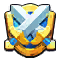
Мощь Might, Power- Сила аккаунта одним числом. Складывается из зданий, исследований, героев, солдат, выживших и ворона. Большая мощь ещё не значит сильная армия: здания сильно раздувают число.
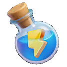
Энергия Stamina- Тратится на атаки скверны и других монстров. Каждый день есть 2 бесплатных флакона по 50 энергии — если не выпить, сгорают. Выпить можно и сверх максимума.
 Щит Shield
Щит Shield- Защищает город от атак и разведки. Отряды вне города не защищает. Слетает, если ты сам на кого-то напал. В зоне боя КвК не работает.
 Перемещение, «тп» Relocate, teleport
Перемещение, «тп» Relocate, teleport- Перенос города в другое место карты. «Направленное перемещение» — в точку, которую выберешь. «Перемещение альянса» — к точке сбора альянса.
 Ускорения Speedups
Ускорения Speedups- Сокращают время стройки, исследований, обучения солдат или лечения. Универсальные подходят ко всему. Трать их в нужный день Дуэли — за них дают очки.
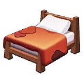
Лазарет Infirmary- Сюда попадают тяжелораненые солдаты. Если лазарет полон, новые раненые сразу погибают. Лечи вовремя.
 Казармы и Полигоны
Казармы и Полигоны- Здания для солдат. В Полигонах солдат обучают, в Казармах — держат. Чем выше уровень, тем больше солдат и сильнее их вид.
 Лаборатория Research
Лаборатория Research- Здание для исследований — постоянных бонусов. Нужна для большинства улучшений Святилища, поэтому качай её вместе с ним.
 Выжившие Survivors
Выжившие Survivors- Жители, которых нанимаешь в Таверне и ставишь работать в здания: больше добычи, места, скорости.
Герои и отряды
Герои, редкость, фракции
 Редкость: UR, SSR, SR
Редкость: UR, SSR, SR- Насколько герой или вещь ценные. UR — золотые, лучшие. SSR — фиолетовые. SR — синие. MR — золотая вещь, доведённая до 5 звёзд.
 Лидерство
Лидерство- Число у героя: сколько солдат он ведёт в бой. Растёт вместе с уровнем героя. Больше лидерства — больше солдат в отряде.
 Противоядие
Противоядие- Ресурс для повышения уровня героев. Делается в Мастерской противоядия, ещё даётся за стройки, сокола, караваны и секретные операции. Копи и трать в четверг (день героев в Дуэли).
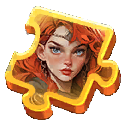
Фрагменты героя Shards- Части героя. Набрал нужное число — получил героя или новую звезду. Универсальные фрагменты подходят любому герою своей редкости. Трать в четверг.
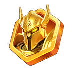
Пробуждение Awakening- Следующая ступень после 10 звёзд у некоторых золотых героев (Марлена, Синтия, Энни, Артур): больше характеристик и уровней навыков.
 Отряд Squad
Отряд Squad- 5 героев с солдатами: 2 впереди, 3 сзади. Отрядов может быть до 4. Подробно — Отряды.
 Танк
Танк- Герой с большим здоровьем и защитой: стоит впереди и принимает удары на себя (Артур, Белла, Шэдоу).
 ДД, атакующий DPS, damage dealer
ДД, атакующий DPS, damage dealer- Герой, который наносит основной урон (Марлена, Синтия, Гренвальд). Стоит сзади.
 Поддержка, саппорт Support
Поддержка, саппорт Support- Герой, который усиливает своих и ослабляет врагов (Харпер, Стеллар, Селия). Стоит сзади.
 Фракция
Фракция- У каждого героя одна из трёх: Воины, Рейнджеры, Колдуны. Если в отряде герои одной фракции, отряд получает прибавку: 3 героя — +5%, 4 — +15%, все 5 — +20%.
 «Контрит», «сильнее против»
«Контрит», «сильнее против»- Так говорят, когда одна фракция сильнее другой. Воин сильнее Рейнджера, Рейнджер сильнее Колдуна, Колдун сильнее Воина. «Сильнее» значит: получает от неё на 20% меньше урона — так написано в подсказке Арены в самой игре.
 Снаряжение Gear
Снаряжение Gear- 4 вещи героя: меч, броня, наручи, сапоги. Золотое — против людей, фиолетовое — против монстров. Подробно — Снаряжение.
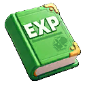
Значки навыков Skill Badges- Ресурс для прокачки навыков героев. Всегда не хватает — отдавай главному атакующему герою.
 Найм, таверна Recruit
Найм, таверна Recruit- Здесь за билеты найма выпадают герои и их фрагменты. Артур гарантированно выпадает в первые 50 наймов.
Бой и карта
Атаки, монстры, карта
- Штурм в гайдах — «ралли», Rally
- Общая атака. Один игрок создаёт штурм на цель, другие нажимают «Вступить» и шлют свои отряды. Через таймер все бьют вместе одним ударом.
 Гарнизон Garrison
Гарнизон Garrison- Отряд, который стоит внутри здания (башни, Королевского города) и защищает его. В КвК за гарнизон капают личные очки.
 Подкрепление Reinforce
Подкрепление Reinforce- Свой отряд, отправленный в город союзника, чтобы помочь ему защищаться.
 Разведка Scout
Разведка Scout- Посмотреть, что у цели: отряды, солдаты, ресурсы. Разведка перед ударом по Королю демонов включает «Боевое безумие» — небольшую прибавку к урону.
 Ресурсная плитка, точка Resource tile
Ресурсная плитка, точка Resource tile- Клетка на карте с зерном, древесиной или травами. Отправляешь туда отряд — он собирает и приносит домой. Правило вежливости: кто первый пришёл, того и плитка.
 Скверна Blight
Скверна Blight- Монстры на карте. Обычная скверна — бить по одному, тратит энергию. Страж скверны (элитная) — сильнее, её бьют штурмом. Блуждающая скверна ходит по карте.
 Король демонов Demon King
Король демонов Demon King- Мировой босс. 10 ударов в день, кроме воскресенья, в ответ не бьёт. Награда — по лучшему одному удару. Подробно — События.
 КвК, Война королевств KvK
КвК, Война королевств KvK- Наш сервер против другого. Всю неделю копим очки, в субботу бой за Королевский город. Подробно — КвК.
 Королевский город, трон Royal City
Королевский город, трон Royal City- Город в центре карты. Кто его держит, тот король сервера. Вокруг 4 башни: каждая захваченная помогает взять город.
 Королевский переполох
Королевский переполох- Бой за Королевский город. Бывает внутри сервера (альянсы против альянсов) и в субботу КвК (сервер против сервера). Так же называется вкладка в окне Войны Королевств.
 Боевое безумие War Frenzy
Боевое безумие War Frenzy- Состояние после твоей атаки или разведки: щит снят, новый какое-то время не включить.
 Поход в чате — «марш»
Поход в чате — «марш»- Отряд, который идёт по карте: на сбор, на монстра, в атаку. Сколько отрядов — столько походов одновременно.
 «Обнулили»
«Обнулили»- У игрока выбили почти всех солдат.
Альянс и события
Альянс, караваны, события
 R1–R5 ранги альянса
R1–R5 ранги альянса- R5 — глава. R4 — офицеры: ставят точку сбора, назначают кучера каравана, запускают события альянса. R1–R3 — участники.
 Альянс
Альянс- Клан. Помогает ускорять стройку, даёт подарки, свой магазин и общие события. Вступай в первый же день.
- Точка сбора альянса
- Метка, которую ставят R4/R5. По «Перемещению альянса» все прыгают к ней.
 Караван
Караван- Повозка с наградами, которая едет 4–5 часов. Чужие можно грабить (4 удачных раза в день). Наш сервер 397 не грабим — галочка.
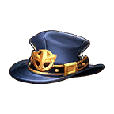
Кучер- Игрок, который ведёт караван альянса. Назначают R4/R5. Пассажиров в вагоны игра выбирает случайно.
 Секретная операция Covert Op
Секретная операция Covert Op- Задание для героев с таймером. Чужие можно грабить 5 раз в день, союзникам помогать 5 раз в день. Наш сервер не грабим.
 Задания сокола
Задания сокола- Короткие задания из Соколиной башни. Можно не сдавать сразу, а копить и сдать в день Дуэли, когда за них дают очки.
 Дуэль альянсов
Дуэль альянсов- Наш альянс против другого всю неделю: каждый день своя тема. Подробно — Дуэль.
 «Держать молоток»
«Держать молоток»- Стройка закончилась, а ты не нажимаешь на молоток над зданием до нужного дня Дуэли. Очки дают за нажатие, а не за конец стройки.
 Битва на выживание
Битва на выживание- Каждый день: каждые 4 часа новая тема (ворон, герои, стройка, солдаты, исследования). Соревнуешься с 12–20 игроками примерно твоего уровня.
 Особые события
Особые события- Кнопка справа вверху экрана: Гонка за эликсиром, Поиск вора и другие. Все события — События.
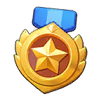
Медали славы- Награда за войну. В их магазине покупай чертежи снаряжения.
- Министр, титул
- Должность от короля сервера с бонусом к стройке, исследованиям или обучению. Действует только на то, что запущено после получения титула.
- NAP пакт о ненападении
- Договор альянсов не нападать друг на друга.
Ворон и предметы
Ворон, предметы, сленг
 Ворон Raven
Ворон Raven- Питомец, который усиливает всех героев сразу. Качается вороньими плодами и эссенцией. Подробно — Ворон.
 Эпиграфы
Эпиграфы- Вставки в ворона, которые усиливают отряд одной фракции. Эпиграф Воина работает только на отряд Воинов.
 Вороньи плоды
Вороньи плоды- Виноград на значке. Поднимают уровень ворона. Трать в понедельник.
 Воронья эссенция
Воронья эссенция- Бутылочка на значке. Нужна для ключевого улучшения ворона каждые 10 уровней.
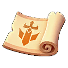
Чертёж- Нужен для звёзд золотого снаряжения.
 Алмазы
Алмазы- Главная платная валюта. Даются и бесплатно — за события и задания.
 Рулетка
Рулетка- Событие, где можно выбить золотых героев (в первые недели сервера — Синтию, потом Джестера и Энни).
 Травы, зерно, древесина
Травы, зерно, древесина- Основные ресурсы. Травы — главный дефицит: на них идёт снаряжение.
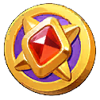
F2P, «бесплатник»- Игрок, который не платит деньги в игре.
- «Кит», донатер
- Игрок, который много платит.
- «Ферма»
- Второй аккаунт игрока, который только собирает ресурсы для основного.
- PvE и PvP
- PvE — бои с монстрами. PvP — бои с живыми игроками (города, арена, КвК).
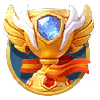
Арена- Бои против отрядов других игроков. Солдаты не гибнут. Отряд 1 — твоя защита на арене.